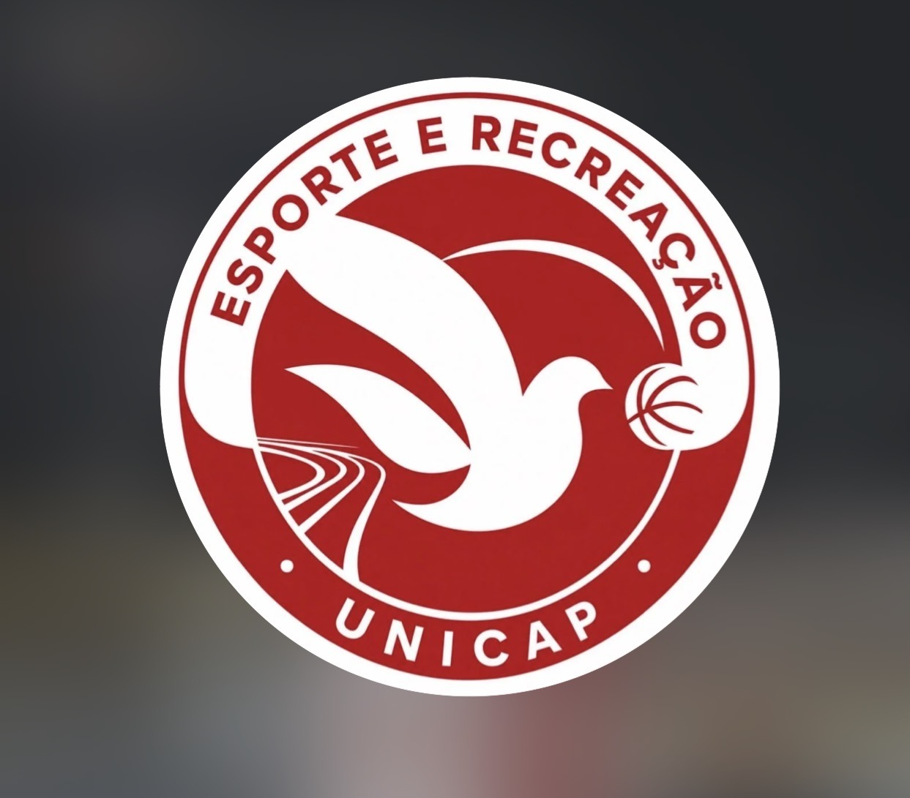
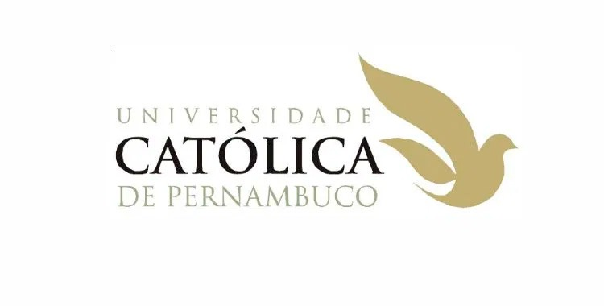

Inscrições encerradas
O prazo de inscrições e o acesso aos painéis de coordenadores de atlética e equipes independentes foram encerrados.
Voltar ao site →
UNICAPEsporte
O prazo de inscrições e o acesso aos painéis de coordenadores de atlética e equipes independentes foram encerrados.
Voltar ao site →